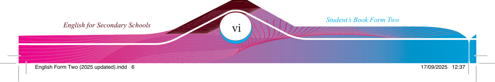

Preface
This textbook, English for Secondary Schools Student’s Book Form Two, has been written specifi cally for Form Two students in the United Republic of Tanzania. The book has been prepared following the 2023 English Language Syllabus for Ordinary
Secondary Education, Form I–IV, issued by the Ministry of Education, Science and
Technology. Some of the contents in this book have been adapted from the English for Secondary Schools Student’s Book Form Two, published in 2018, following the
2009 Ordinary Level Syllabus issued by the then Ministry of Education and Vocational
Training (MoEVT).
The book consists of seven chapters: Listening, Producing oral messages, Vocabulary,
Grammar and vocabulary, Reading comprehension, Comprehending oral messages,
and Responding to oral and written communication. The book contains engaging
learning activities and real-life examples to help you develop the four basic language
skills: listening, speaking, reading and writing. In addition, the book will help you expand your vocabulary through participating in conversation and reading texts that you will use in your everyday communication.
Additional learning resources are available in the TIE e-Library at https://ol.tie.go.tz or ol.tie.go.tz.

Tanzania Institute of Education